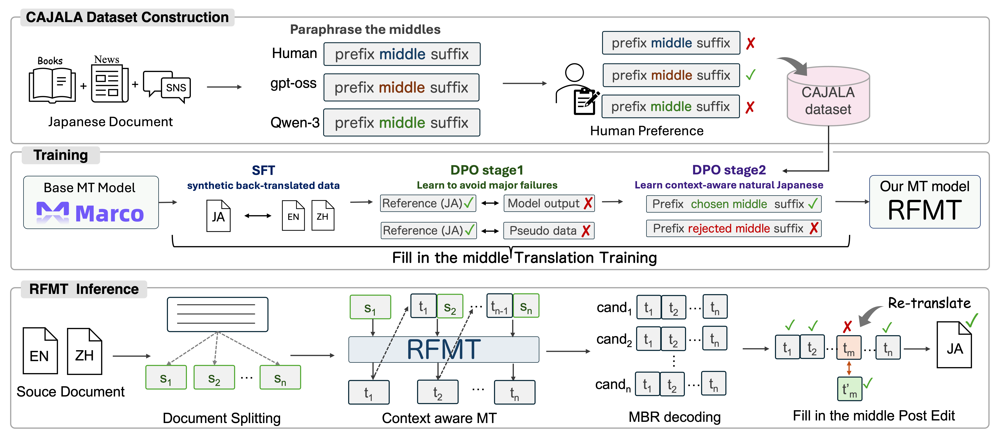

We participated in the constrained (open-weight) track of the WMT 2026 General Machine Translation Task for the English-to-Japanese and Simplified Chinese-to-Japanese directions. Our system builds on Marco-MT-Algharb, a strong open-weight translation model from the previous WMT General MT task. We further fine-tuned this model to generate more natural Japanese translations. To this end, we constructed a Context-Aware Japanese Linguistic Acceptability dataset (CAJALA). During annotation, human annotators were shown multiple paraphrased variants of a segment within its document-level context and asked to select the most natural one. We then back-translated the CAJALA dataset to create parallel data for Direct Preference Optimization (DPO). We also trained the model to perform fill-in-the-middle (FIM) translation, in which the model reconstructs target-side segments from their surrounding document. At inference, we use Minimum Bayes Risk (MBR) decoding, followed by selective FIM post-editing of low-quality segments.
Our system builds on ATH-MaaS/Marco-MT-Algharb, which we fine-tuned to specialize in Japanese translation and to support FIM translation. Furthermore, we trained it to accept auxiliary information via prompting, such as the source domain, target styles (e.g., polite or plain forms), and glossary entries.
Our inference pipeline consists of four stages:

CAJALA is a dataset that annotates the acceptability of segments within Japanese documents. Specifically, we collect human preferences based on the naturalness and consistency of Japanese expressions within document-level contexts. Each sample consists of a Japanese document and three variants of one segment: the original segment from an existing corpus and two paraphrases generated by LLMs.
To construct the dataset, we used crowdsourcing. We showed human annotators three segment variations (the two paraphrases and the original text) alongside their surrounding context. We then asked the annotators to select the variation that best fits the overall flow of the document.
We obtained the original Japanese documents from a subset of the ja_fineweb-2 split in the
llm-jp-corpus-v4.
We used an LLM to classify these documents by domain and retained samples identified as News, SNS, or
Literature.
We used an LLM-as-a-judge to identify segments that allowed meaningful alternative expressions and
retained them for crowdsourcing.
Each example below contains three valid responses, and one candidate received all three votes. Compare the three candidate segments alongside their surrounding document context. The vote counts show the annotators’ preferences. Expand the context to read the full text, or highlight changes from Original to inspect differences in wording.
Loading CAJALA examples...
We generated candidate segments by instructing LLMs to paraphrase the original Japanese expressions
into more natural alternatives.
We used Qwen3.5-397B-A17B-FP8 and gpt-oss-120b for this task.
These two generated paraphrases and the original segment formed the three candidates.
During human annotation, we presented these three segment variations with the same surrounding context and asked annotators to select the most acceptable segment. We instructed them to consider the acceptability of each candidate and its consistency in style and terminology with the surrounding context.
All human annotations were collected through Yahoo! Crowdsourcing. A total of 2,048 unique workers participated in the annotation project. We progressively selected workers over multiple rounds based on a worker quality score computed from their responses and annotation behavior.
We collected 7,345 unique samples, each evaluated by up to three annotators. The selection rates below are based on a total of 20,248 valid responses in the public release.
Share of 7,345 samples
Share of 20,248 valid responses
Number of samples
We constructed synthetic parallel data to adapt the model for translation into Japanese. For these monolingual corpora, we used the llm-jp-corpus-v4, alongside transcriptions from the Japanese subsets of CC Audio and YODAS2.
We performed domain identification, noise removal, back-translation, cleaning, terminology extraction, and style identification. We also constructed a dictionary of terms specifically for glossary prompting. It consists of a large number of word-level parallel pairs, primarily targeting low-frequency and domain-specific terms.
As our base model, we used Marco-MT-Algharb, which ranked first in the English-to-Japanese constrained track of the WMT 2025 General MT Task. Starting from this model, we first conducted supervised fine-tuning (SFT) on synthetic translation data to specialize it for Japanese translation and train it to follow various prompting strategies. We then performed direct preference optimization (DPO) using additional synthetic preference data and CAJALA to improve translation quality. In parallel, we included FIM training, in which the model reconstructs a missing target-side segment from its surrounding context.
Starting from Marco-MT-Algharb, we performed additional training using the back-translation dataset constructed from the monolingual corpora.
We performed DPO in two stages using different datasets.
We trained the model on a mixture of three types of preference data.
For LLM-as-a-judge preferences, we used gemma-4-31B-it to compare the output of a
model under development with the reference provided in the dataset.
We defined the translation judged as higher quality by the LLM as the chosen response, and the other as
the rejected response.
For synthetic repetition, we artificially added repetition to the reference and used the modified
version as the rejected response and the original reference as the chosen response.
For synthetic untranslated content, we replaced part of the reference suffix with the corresponding
suffix from the source text.
The modified version was used as the rejected response, and the original reference was used as the
chosen response.
We trained the model on the back-translated CAJALA dataset. We defined the chosen and rejected responses as the documents containing segments judged as more acceptable by two or more annotators and by fewer than two annotators, respectively. To construct the training pairs, we back-translated the chosen responses into English and Chinese to serve as the source sentences.
Inspired by FIM training, we use FIM to enable localized post-editing while preserving document context. During training, we omit a target-side segment and train the model to reconstruct it from the corresponding source-side segment and both preceding and following target-side context. Unlike standard left-to-right decoding, which only conditions on preceding target context, FIM translation allows the model to revise a specific segment using context on both sides without regenerating the surrounding translation.
For each training sample, we randomly selected one segment from the source document and enclosed it with
the special tokens <|fim_start|> and <|fim_end|>.
We then provided the target document in which the target-side segment corresponding to the selected
source-side segment was replaced with <|fim_skip|> as the first Assistant response.
The omitted target-side segment was provided as the second Assistant response.
At inference time, we replace the target-side segment to be retranslated with
<|fim_skip|> and provide the resulting incomplete target document together with the
source document.
We then prompt the model to generate the missing target-side segment.
This format trains the model to reconstruct a missing target-side segment from its surrounding target-side
context.
Source document: ... <|fim_start|> source segment <|fim_end|> ...
Target document: ... preceding target context <|fim_skip|> following target context ...
Generated segment: target-side segment reconstructed from both sides of the contextFor each source document, we perform three preprocessing steps: segment splitting (parsing structured input), domain identification, and style identification. These steps enable segment-level translation and allow us to incorporate auxiliary information into the prompts during inference.
| Stage | Description |
|---|---|
| Stage 1 | Preprocessing. We identify the domain, segment the text, and parse inputs in JSON or HTML formats. |
| Stage 2 | Translation. We translate the document segment by segment using MBR decoding. |
| Stage 3 | FIM Post-editing. We detect low-quality segments and retranslate them using FIM translation. |
| Stage 4 | Post-processing. We reconstruct the document and restore its original format. |
We evaluated the systems on the WMT 2026 blind test set. We evaluated translation quality using an LLM-as-a-judge. Specifically, we employed Gemini 3.1 Pro Preview, the latest model in the Gemini family. We provided the source text and the hypothesis as input and asked the model to assign an integer score from 0 to 100. We then averaged the scores over all samples to obtain the mean score for each language pair and system.
The table reports the LLM-as-a-judge evaluation results for Base, SFT, DPO Stage 1, DPO Stage 2, DPO Stage 2 with MBR decoding, and our final RFMT system. These configurations are cumulative, with each configuration adding a training or inference component to the preceding one. For RFMT, we re-evaluated the four English-to-Japanese outputs changed by FIM post-editing and recomputed the overall score while retaining the original scores for all other samples. Values are reported as the mean ± 95% CI.
Scroll horizontally to view all scores. System names remain visible.
| System | Model Adaptation | Inference | Score ↑ | ||||||
|---|---|---|---|---|---|---|---|---|---|
| SFT | DPO | MBR | FIM | JSON | News | Social | Speech | Overall | |
| English-to-Japanese | |||||||||
| Base | 87.9±4.6 | 48.1±9.6 | 55.7±5.3 | 65.5±3.4 | 62.9±2.9 | ||||
| SFT | ✓ | 56.9±13.5 | 44.4±5.5 | 46.5±6.5 | 59.0±4.0 | 55.2±3.2 | |||
| DPO-1 | ✓ | ✓ | 85.0±11.7 | 68.2±9.8 | 68.8±6.1 | 73.0±3.6 | 72.2±2.9 | ||
| DPO-2 | ✓ | ✓ | 77.1±8.6 | 66.6±7.8 | 66.3±5.9 | 72.9±3.6 | 71.1±2.8 | ||
| DPO-2+MBR | ✓ | ✓ | ✓ | 86.9±8.3 | 67.4±7.3 | 69.6±6.0 | 72.3±3.5 | 71.9±2.9 | |
| RFMT (ours) | ✓ | ✓ | ✓ | ✓ | 86.9±8.3 | 67.4±7.3 | 70.4±5.8 | 72.3±3.5 | 72.1±2.8 |
| Simplified Chinese-to-Japanese | |||||||||
| Base | — | 12.6±5.5 | 26.5±4.4 | 49.5±4.6 | 38.4±3.7 | ||||
| SFT | ✓ | — | 67.3±6.9 | 41.5±5.1 | 47.4±4.5 | 48.9±3.3 | |||
| DPO-1 | ✓ | ✓ | — | 73.5±8.0 | 48.0±5.6 | 63.9±4.3 | 61.5±3.4 | ||
| DPO-2 | ✓ | ✓ | — | 76.4±6.7 | 44.8±5.3 | 62.8±3.7 | 60.4±3.1 | ||
| DPO-2+MBR | ✓ | ✓ | ✓ | — | 78.4±6.3 | 44.8±5.8 | 63.5±3.9 | 61.2±3.3 | |
| RFMT (ours) | ✓ | ✓ | ✓ | ✓ | — | 78.4±6.3 | 44.8±5.8 | 63.5±3.9 | 61.2±3.3 |
@inproceedings{matsuda-etal-2026-rfmt,
title = "{RFMT} at {WMT} 2026 General Translation Task",
author = "Matsuda, Ryosuke and
Kudo, Keito and
Fujii, Ryo and
Ito, Takumi and
Morishita, Makoto and
Suzuki, Jun",
booktitle = "Proceedings of the Eleventh Conference on Machine Translation"
}This website is adapted from Nerfies, licensed under a Creative Commons Attribution-ShareAlike 4.0 International License.